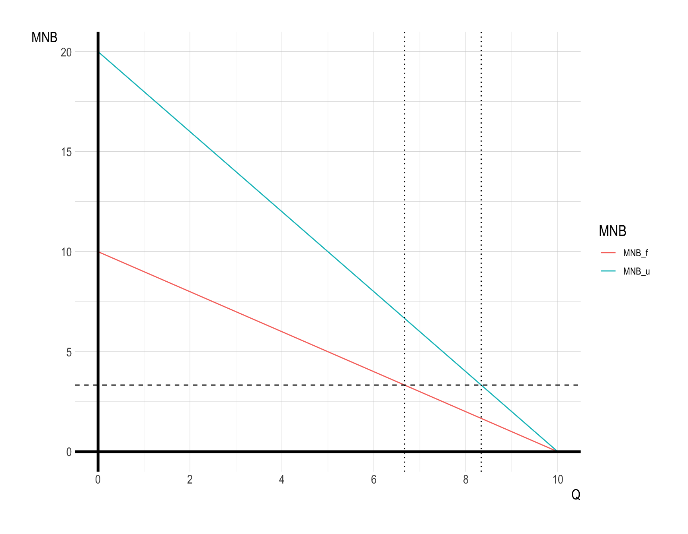

Homework 5 - Example Answer
Question 1.
Farmer’s marginal net benefit of water use is given by: \[ MNB_{f} = 10 - Q_{f} \]
Urban household’s marginal net benefit of water use is: \[ MNB_{u} = 20 - 2Q_{u} \]
The total water supply is \(Q_{total} = 15\) units for any level of price.
Q1a
Find the efficient allocation of water use.
Answer:
At the efficient allocation, the following equimarginal principle holds:
\[ \begin{align} MNB_{f} = 10 - Q_{f} &= 20 - 2Q_{u} = MNB_{u}\\ Q_{f} + Q_{u} &= 15 = Q_{total} \end{align} \]
Therefore, \(Q_{f}^{*} = \frac{20}{3}\) and \(Q_{u}^{*} = \frac{25}{3}\).
Q1b
If water supply drops to 8 units for any level of price, what will be the efficient allocation of water use?
Answer:
At the efficient allocation with \(Q_{new\_total} = 8\), the following equimarginal principle holds:
\[ \begin{align} MNB_{f} = 10 - Q_{f} &= 20 - 2Q_{u} = MNB_{u}\\ Q_{f} + Q_{u} &= 8 = Q_{new\_total} \end{align} \]
Therefore, \(Q_{f}^{**} = 2\) and \(Q_{u}^{**} = 6\).

Question 2.
Water is an essential resource. For that reason moral considerations exert considerable pressure to assure that everyone has access to at least enough water to survive. Yet it appears that equity and efficiency considerations may conflict. Providing water at zero cost is unlikely to support efficient use (marginal cost is too low), while charging everyone the market price (especially as scarcity sets in) may result in some poor households not being able to afford the water they need. Discuss how block-rate pricing attempts to provide some resolution to this dilemma. How would it work?
Answer:
The key to using the tiered system for this purpose is to distinguish water needs by monthly volume. Specifically, the first block could contain a basic amount of water that fulfills essential purposes, while the second block contains all other water above that amount. The first block would be priced at a low level, while the second block price would reflect all of the scarcity rent generated by the marginal user cost as well as the marginal cost of extraction and distribution. Since the positive marginal user cost means that the marginal revenue for that block would be above the marginal extraction plus distribution cost, the utility could still cover its expenses despite the low cost of the first units. Meanwhile, because most households would consume at least some more water than allowed in the first block, the price they would face for the additional water would be the efficient (marginal cost) price in the second block. The fact that the price for the additional water would be the efficient price would preserve incentives to conserve an efficient amount.
Question 3.
Assume that the relationship between the growth of a fish population and the population size can be expressed as \(g = 4P – 0.1P^{2}\), where \(g\) is the growth in tons and \(P\) is the size of the population (in thousands of tons). Given a price of $100 a ton, the marginal benefit of smaller population sizes (and hence larger catches) can be computed as \(20P – 400\).
Q3a
- Compute the population size that is compatible with the maximum sustainable yield.
- What would be the size of the annual catch if the population were to be sustained at this level?
Answer:
The maximum sustainable yield is obtained when the marginal benefit of an additional reduction in the population size is zero: \(20P – 400 = 0\) or \(P = 20,000\) tons. The maximum sustainable yield can then be calculated using the \(g\) equation: \(g = 4(20) –0.1(20)2 = 40\) tons.
Q3b
If the marginal cost of additional catches (expressed in terms of the population size) is \(MC = 2(160 – P)\), what is the population size that is compatible with the efficient sustainable yield?
Answer:
The efficient sustained yield can be found by setting marginal cost equal to marginal benefit: \(20P – 400 – 2(160 – P)\); therefore, \(P = 32.7\), which is a larger population than the one that would produce the maximum sustainable yield.
Question 4.
Consider a village of \(N\) identical fishermen ( \(i = 1, 2, 3, \cdots, N\) ) nearby the Erie Lake. They all have a choice of how much time they want to spend fishing per day, denoted by \(a_{i}\). Thus, the total time of fishing per day in the village is given by:
\[ \sum_{i = 1}^{N} a_{i} = a_{1} + a_{2} + \cdots + a_{N}. \]
Suppose the stock of fishes over time \(S\) in the Erie Lake is represented by a function of the total time of fishing per day:
\[ \begin{align} S &= 1000 - \sum_{i = 1}^{N} a_{i}\\ &= 1000 - ( a_{1} + a_{2} + \cdots + a_{N} ) \end{align} \]
The amount of fishes fisherman \(1\) catches is the fisherman \(1\)’s utility \(U_{1}\), which is represented by:
\[ \begin{align} U_{1} &= a_{1}\times S\\ &= a_{1}\times \left(\, 1000 - ( a_{1} + a_{2} + \cdots + a_{N} ) \,\right) \end{align} \] Each fisherman \(i\) chooses how much time to spend fishing per day (\(a_{i}\)) to maximize his utility (\(U_{i}\)).
Q4a
- How much time will fisherman \(1\) spend fishing per day if the government does not intervene?
Answer:
Taking other fishermen’s harvesting decisions as given, fisherman 1 maximizes his utility: \[ \begin{align} \max_{a_{1}}\,U_{1} &= a_{1}\times S\tag{Fisherman-1}\\ &= a_{1}\times \left(\, 1000 - ( a_{1} + a_{2} + \cdots + a_{N} ) \,\right) \end{align} \]
First-order condition for problem (Fisherman-1) is
\[ \begin{align} \frac{dU_{1}}{da_{1}} &= S + a_{1}\frac{dS}{da_{1}}\\ &= S + a_{1}\times(-1)\\ &= 1000 - ( a_{1} + a_{2} + \cdots + a_{N} ) - a_{1} = 0.\tag{FOC-1} \end{align} \] Since all fishermen are identical, their optimal harvesting decisions are identical. Let \(a^{*}\) denote their optimal amount of harvesting time: \[ a^{*} = a_{1}^{*} = a_{2}^{*} = \cdots = a_{N}^{*} \]
Equation (FOC-1) then simplifies to:
\[ \frac{dU_{1}}{da_{1}} = 1000 - (N+1)a^{*} = 0 \] Therefore, fisherman \(1\) will spend \(a^{*} = \frac{1000}{N+1}\).
Notice that the amount of optimal harvesting time \(a^{*}\) decreases with \(N\).
Q4b
- How much fishes will fisherman \(1\) catch?
Answer:
All fishermen will catch \(U^{*}_{1} = U^{*}_{2} = \cdots = U^{*}_{N}\):
\[ \begin{align} U^{*} &= a^{*}\times S^{*}\\ &= a^{*}\times \left( 1000 - N\times a^{*} \right)\\ &= \frac{1000}{N+1} \times \left( 1000 - N\times \frac{1000}{N+1} \right)\\ &= \frac{1000^{2}}{N+1}\left( 1 - \frac{N}{N+1} \right)\\ &= \frac{1000^{2}}{N+1}\times \frac{1}{N+1} \\ &= \left(\frac{1000}{N+1}\right)^{2} \\ \end{align} \]
Notice that the amount of optimal catch \(U^{*}\) decreases with \(N\).
Q4c
If the fishermen jointly maximize the social welfare of the village, how much time each fisherman spend fishing per day and how much fishes each fisherman catch?
- Social welfare is given by:
\[ \begin{align} SW = U_{1} + U_{2} + \cdots + U_{N} \end{align} \]
Answer:
If all fishermen jointly maximize the social welfare, the amount of total catches of the Erie Lake, we solve the following problem instead: \[ \begin{align} \max_{a_{1}, \cdots, a_{N}}\,SW &= U_{1} + U_{2} + \cdots + U_{N}\tag{SW-max}\\ &= a_{1}\times S + a_{2}\times S + \cdots + a_{N}\times S \\ &= (a_{1} + a_{2} + \cdots + a_{N})\times S \end{align} \] First-order condition of \(a_{1}\) for problem (SW-max) is:
\[ \begin{align} \frac{\partial SW}{\partial a_{1}} &= S + (a_{1} + a_{2} + \cdots + a_{N})\frac{\partial S}{\partial a_{1}}\\ &= S + (a_{1} + a_{2} + \cdots + a_{N})\times(-1)\\ &= 1000 - 2\times( a_{1} + a_{2} + \cdots + a_{N} ) = 0\tag{SW-FOC-1} \end{align} \] Since all fishermen are identical, their optimal harvesting decisions are identical. Let \(a^{o}\) denote their optimal amount of harvesting time for the problem (SW-max): \[ a^{o} = a_{1}^{o} = a_{2}^{o} = \cdots = a_{N}^{o} \]
Equation (SW-FOC-1) simplifies to
\[ \frac{\partial SW}{\partial a_{1}} = 1000 - 2\times N\times a^{o} = 0 \]
Therefore, each fisherman will catch \(a^{o} = \frac{500}{N}\), which is less than \(a^{*} = \frac{1000}{N+1}\) for any \(N\geq 2\).
Q4d
- If there are 1,000 fishermen in the village, how much fish stock \(S\) will be left in the Erie Lake after the scenarios outlined in Q4a/Q4b and in Q4c, respectively?
- Provide an intuitive explanation on how fish stocks in both scenarios are different.
- Make any policy suggestion on managing open access fishery in the village nearby the Erie Lake.
Answer:
The fish stock under the scenario Q4a/Q4b (Open-Access) will be: \[ \begin{align} S^{*} &= 1000 - N\times \frac{1000}{N+1}\\ &= 1000\times\left( 1 - \frac{N}{N+1} \right)\\ &= \frac{1000}{N+1} \end{align} \] Notice that the fish stock \(S^{*}\) decreases with \(N\).
The fish stock under the scenario Q4c (the type of cooperative, community-based management solutions) will be: \[ \begin{align} S^{o} &= 1000 - N\times \frac{500}{N}\\ &= 500 \end{align} \]
Therefore, \(S^{o} > S^{*}\) for any \(N \geq 2\).
Policy Suggestions for Managing the Open-Access Fishery
Managing an open-access fishery to avoid over-exploitation requires policies that change the incentives faced by individual fishermen. Some policy approaches include: 1. Raising the Real Cost of Fishing: - By increasing the cost of effort (for example, through stricter gear restrictions, licensing requirements, or reduced fishing times), fishermen are encouraged to fish less intensely. While this can conserve fish stocks, it may also lead to inefficiencies—fishers may invest in less efficient methods simply to comply with regulations, driving up real resource costs without fully aligning incentives toward sustainability. 2. Implementing Taxes on Effort or Catch: - A tax on fishing effort or the amount caught increases the marginal cost of harvesting each fish. When designed appropriately, such taxes can lead fishermen to reduce their fishing effort to socially optimal levels. This approach encourages fishers to adopt more efficient technologies and methods because they internalize the cost of overfishing. The revenue collected from taxes can be used to improve fishery management, invest in conservation, or compensate affected communities. 3. Reducing or Eliminating Harmful Subsidies: - Many governments subsidize inputs like fuel or gear, making it cheaper to fish and thus promoting overfishing. Removing these subsidies discourages excessive effort, helping to maintain healthier fish stocks. Without subsidies, fishermen are more likely to fish only when it is economically viable and less likely to over-exploit the resource. 4. Establishing Catch Share Programs (such as ITQs - Individual Transferable Quotas): - Allocating each fisherman or a group of fishermen a specific share of the total allowable catch transforms them from competitors into stakeholders with a vested interest in sustainability. When fishers have secure rights to a portion of the catch, they have incentives to fish at sustainable levels and invest in maintaining or improving the resource. Market-based transfers of quotas allow more efficient fishers to buy shares, leading to overall cost-effective fishing practices.
Informal Arrangements In Q4c, the fishermen are no longer acting purely as individual profit-maximizers under open access. Instead, they coordinate their effort to achieve a social optimum, recognizing the collective nature of their fishery resource. This shift—where the community as a whole decides on and abides by rules for effort levels—mirrors the approach outlined by the lecture slide and Nobel Laureate Elinor Ostrom’s book, Governing the Commons.
Ostrom’s work demonstrated that communities can manage common-pool resources sustainably through self-imposed rules, social norms, and enforcement mechanisms without requiring top-down government intervention or privatization. Such arrangements are often referred to as community-based or co-management regimes. They rely on trust, communication, transparency, and shared decision-making to overcome the “tragedy of the commons.”
While the Q4c scenario is a simplified model that does not explicitly describe the institutional details (such as rule-making bodies, monitoring, conflict resolution, or sanctioning mechanisms), the essence of the scenario—fishermen agreeing to limit their individual harvesting for the greater long-term benefit—resonates strongly with Ostrom’s insights. Thus, Q4c captures the conceptual spirit of informal, community-based management regimes advocated by Ostrom, where collective governance and shared stewardship lead to more sustainable outcomes.